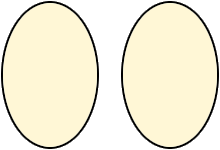

The eyeballs track mouse pointer movement. When mouse capture is on, they follow the mouse pointer no matter where it is positioned in the document. When mouse capture is off, they detect and follow mouse position only while the pointer is positioned over the eyeball graphic.
In this example, mouse capture is set when the document is loaded. Click anywhere on the document to remove mouse capture.